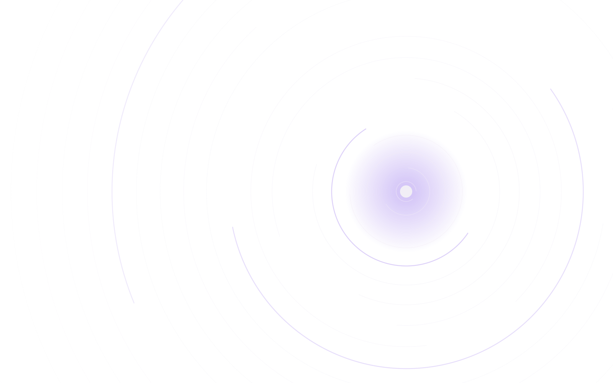
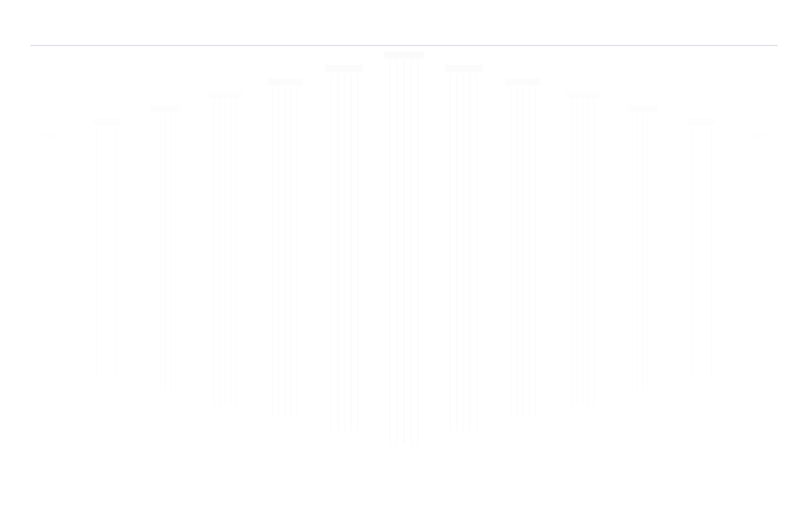
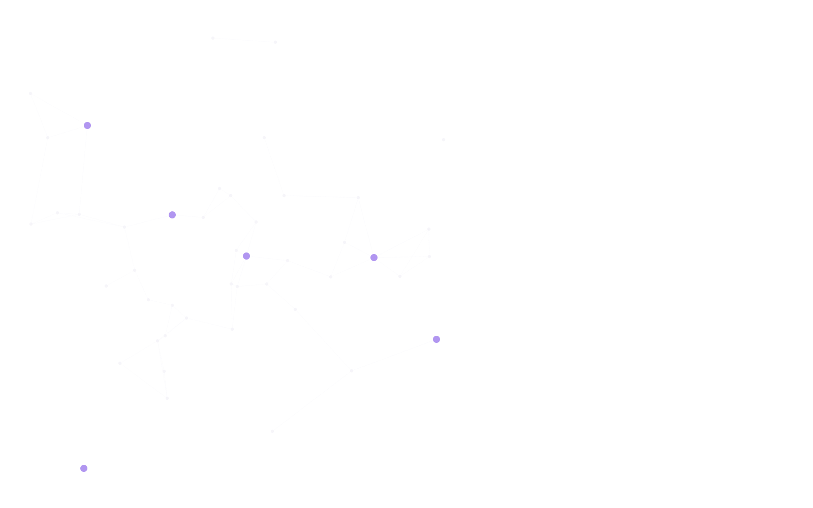
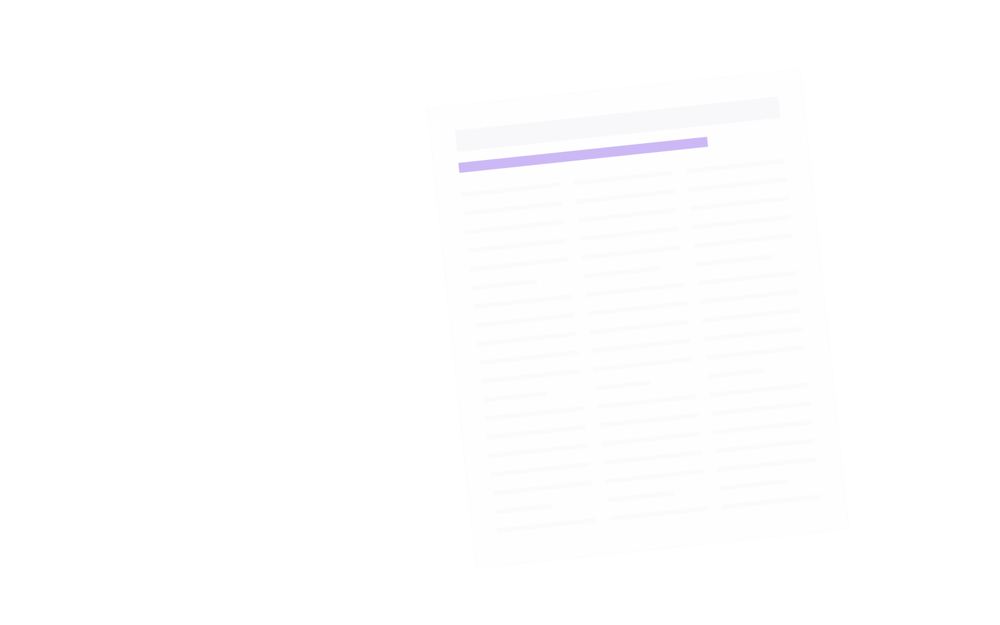
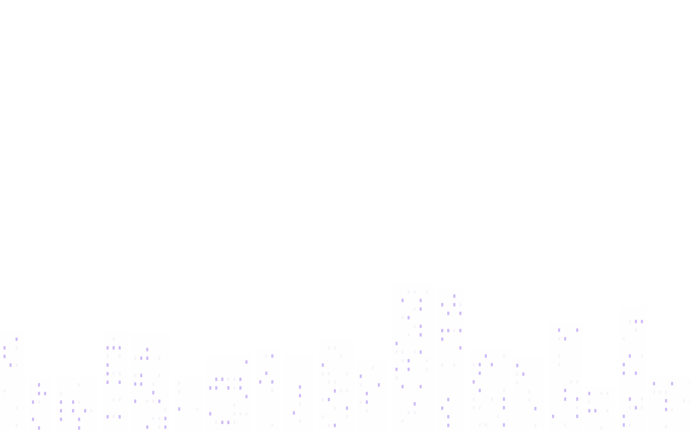

Branding
Posicionamento, identidade e linguagem do escritório: como ele se apresenta e por que é lembrado na sua área de atuação.
Marketing jurídico para escritórios que desejam construir autoridade, reputação e crescimento sustentável.
Da tese ao conteúdo: comunicação estratégica e ética, feita exclusivamente para a advocacia.
Com relacionamento consolidado junto aos principais veículos especializados do país, seu nome chega aonde o mercado presta atenção.
Conversar no WhatsApp
A UNA nasceu para fortalecer a reputação institucional de escritórios de advocacia, advogados e organizações do setor jurídico. Mais do que ampliar a presença digital, desenvolvemos projetos personalizados que valorizam o posicionamento, a identidade e os objetivos de cada cliente, sempre em conformidade com os princípios éticos da advocacia.
Fundada em 2019 pela jornalista Patrícia Sousa, que soma mais de quinze anos em comunicação corporativa, relações com a imprensa, branding e marketing jurídico. Com atuação em todo o Brasil, transformamos conhecimento técnico em autoridade e reconhecimento no mercado.

Posicionamento, identidade e linguagem do escritório: como ele se apresenta e por que é lembrado na sua área de atuação.
A marca pessoal do advogado e dos sócios. Os temas que defendem, o tom com que falam e os espaços onde vale a pena estar.
Pautas, artigos e entrevistas com os veículos especializados, para que a opinião técnica do escritório entre no debate público.
Relacionamento com entidades, eventos e públicos estratégicos do setor jurídico, construído com consistência.
Artigos, posts e materiais institucionais que traduzem o conhecimento jurídico sem perder o rigor técnico.
Conteúdo em vídeo gravado e editado no celular, pensado para as redes, com a linguagem e a sobriedade da advocacia.


Alguns temas jurídicos que acompanhamos e levamos ao debate recentemente:

Conte em poucas linhas o momento do escritório e o que gostaria de construir. Respondemos por e-mail ou WhatsApp.